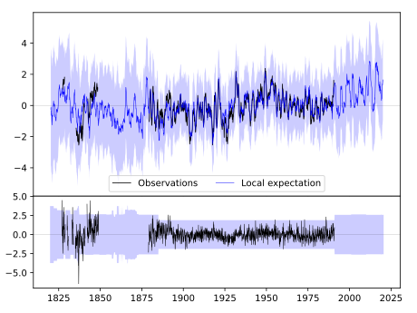
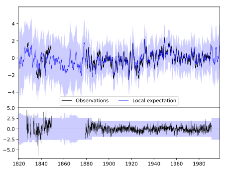
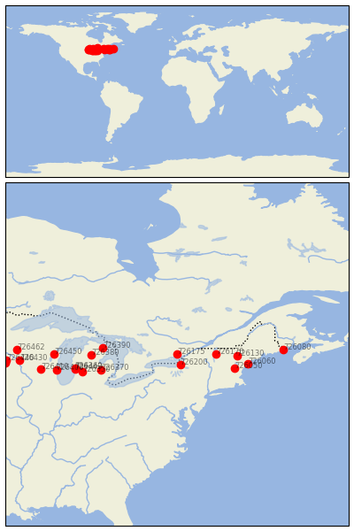

ITHACA [USA]


| Neighbour | Name | Country | Distance | Lon/Lat | Years |
|---|
| 726175 | ITHACA | USA | 0 | -76.8, 44.5 | 1827-1990 |
| 726200 | OSWEGO | USA | 113 | -76.5, 43.5 | 1885-1990 |
| 726170 | BURLINGTON WSO AP | USA | 285 | -73.2, 44.5 | 1828-2020 |
| 726130 | MOUNT WASHINGTON | USA | 437 | -71.3, 44.3 | 1934-2020 |
| 726050 | CONCORD | USA | 448 | -71.5, 43.2 | 1871-2020 |
| 726060 | PORTLAND JETPORT | USA | 528 | -70.3, 43.6 | 1824-2020 |
| 726390 | ALPENA, MICHIGAN | USA | 540 | -83.6, 45.1 | 1873-2020 |
| 726370 | FLINT/BISHOP | USA | 586 | -83.8, 43.0 | 1941-2020 |
| 726380 | HOUGHTON-LAKE------- | USA--------- | 626 | -84.7, 44.4 | 1931-2020 |
| 726350 | GRAND RAPIDS | USA | 721 | -85.5, 42.9 | 1887-2020 |
| 726360 | MUSKEGON/COUNTY | USA | 767 | -86.2, 43.2 | 1940-2020 |
| 726443 | GRAND HAVEN | USA | 769 | -86.2, 43.1 | 1871-1980 |
| 726080 | EASTPORT | USA | 775 | -67.0, 44.9 | 1822-2019 |
| 726450 | GREEN BAY, WISCONSIN | USA | 895 | -88.1, 44.5 | 1886-2020 |
| 726400 | MILWAUKEE/G.MITCHELL | USA | 906 | -87.9, 43.0 | 1941-2020 |
| 726410 | MADISON, WISCONSIN | USA | 1014 | -89.3, 43.1 | 1869-2020 |
| 726430 | LA CROSSE/MUNICIPAL | USA | 1156 | -91.3, 43.9 | 1873-2020 |
| 726462 | EAU CLAIRE | USA | 1161 | -91.5, 44.9 | 1891-1980 |
| 726440 | ROCHESTER/MUNICIPAL | USA | 1251 | -92.5, 43.9 | 1932-2020 |
| 726442 | GRAND MEADOW | USA | 1262 | -92.6, 43.7 | 1893-2019 |